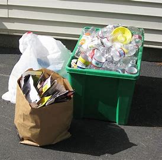

¿Que es la contaminacion ambiental?
Llamamos contaminación ambiental a la introducción en el medio ambiente de cualquier tipo de agente físico, químico y/o biológico que provoca cambios perjudiciales en el medio ambiente.
Estos cambios también pueden afectar a la salud, bienestar o supervivencia de la biodiversidad o en general.
tipos de contaminacion
Existen muchos tipos de contaminacion, a continuación estaran algunos tipos de contaminacion y sus descripciones
Contaminacion del aire
Este tipo de contaminación ambiental altera la composición química y natural del aire, afectando a toda la vida que habita el planeta, especialmente a los animales.
Contaminacion del agua

Este tipo de contaminación ambiental se produce cuando se introduce un agente contaminante que altera los diferentes cauces de agua. Esta contaminación afecta a las especies animales y vegetales que habitan en dichas aguas pero, además, según la Organización de las Naciones Unidas (ONU) en la actualidad 1 de cada 3 habitantes se ve perjudicado por esta contaminación.
Contaminacion del suelo

En este tipo de contaminacion suelen ser afectadas las plantas, por que estas son las que obtienen sus nutrientes directamente del suelo.
En esta pagina web encontraras en mas detalles el problema y las posibles Soluciones